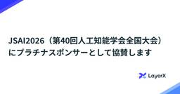
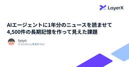
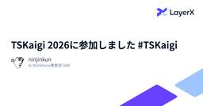

LayerX エンジニアブログ
https://tech.layerx.co.jp/
LayerX の エンジニアブログです。
フィード

JSAI2026（第40回人工知能学会全国大会）にプラチナスポンサーとして協賛します 1
1
LayerX エンジニアブログ
こんにちは、バクラク事業部で機械学習エンジニアをしている伊藤です。 LayerXは、JSAI2026（第40回人工知能学会全国大会）にプラチナスポンサーとして協賛します。LayerXがJSAIに参加するのは昨年に引き続き4回目となり、本大会でも企業ブース展示、インダストリアルセッションでの発表を予定しております。 イベント概要 当社の参加内容 インダストリアルセッション 企業展示 学生向けランチ懇親会 協賛の背景 さいごに LayerXにおけるAI・機械学習関連の記事 イベント概要 JSAI（人工知能学会全国大会）は、人工知能学会 が年に1度開催する、人工知能および関連分野の研究発表や交流の場…
2日前
「どの項目を改善すれば仕訳の自動化率が上がるか」を試算するシミュレーターを作った話 3
LayerX エンジニアブログ
0. はじめに バクラク事業部で債務管理の開発をしておりますshoyanです。同事業部では「業務の自動運転」を目指し、KPI の一つとして自動化率をトラッキングしています。その一環として、初期補完で生成される仕訳の手修正を減らし、自動化率を上げたいと考えています。 そこで、「どの項目を改善すれば仕訳の自動化率に効くのか」を試算するシミュレーターを作りました。きっかけは、各項目の修正率を見ても、その項目を改善したときに全体の自動化率がどれだけ上がるかは直感に反することがある、という気づきです。修正率が高い項目を直しても、伝票単位の手作業はほとんど減らない、そんなケースが起こり得ます。これから取り…
3日前

AIエージェントに1年分のニュースを読ませて4,500件の長期記憶を作って見えた課題 48
LayerX エンジニアブログ
はじめに LayerX Ai Workforce事業部でApplied R&D をしているtyoyoです。 AI Agentの長期記憶に関して様々な手法が提案されていますが、そのどれもが実際に長期間で運用されたことはほとんどないはずです。なぜなら、それらが台頭したのが最近だからです。 個人的に長期記憶についての肌感覚がなかったので、実験として「1年分のAIニュースの長期記憶」を作ってみることにしました。 最大6並列で約20時間、607回のセッション、4,552個のmemoryファイル ー 動かしてみないと分からない「長期記憶の課題」にぶつかるため、今回はこういった規模でシミュレーションを行いま…
4日前

TSKaigi 2026に参加しました #TSKaigi 1
LayerX エンジニアブログ
こんにちは。Ai Workforce事業部 開発部の id:ninjinkun です。 先日開催されたTSKaigi 2026において、LayerXはゴールドスポンサーおよび学生支援スポンサーとして協賛しました。 このエントリでは弊社社員の登壇資料の共有、1日目の最後に行われた基調講演の様子、そしてLayerXブースの様子をレポートします。今回はゴールドスポンサーとしての出展に加え、LayerXから総勢4名のエンジニアが登壇しました。まずはそれぞれの登壇資料からご紹介します。 登壇資料 API設計や型の推論にまつわる話まで、幅広いテーマでの登壇となりました。各発表の資料は以下の通りです。もしご…
5日前

Snowflakeとdbtでモデルの依存関係にガバナンスを効かせる
LayerX エンジニアブログ
この記事では、Snowflake と dbt を使ったデータ基盤で、意図しないデータ参照を防ぐために作った dbt package、dbt-authorized-models を紹介します。
9日前
Google Sheets から Snowflake を参照するアドオンの実行基盤を Snowflake Tasks に移行した
LayerX エンジニアブログ
はじめに こんにちは、LayerX バクラク事業部 BizOps 部データグループの平田 (@TrsNium) です。 以前、Google Apps ScriptでSnowflakeとGoogle Sheetsを連携するアドオンを開発した話という記事で、Google Apps Scriptを使ってSnowflakeとGoogle Sheetsを連携するアドオンを開発した話をしました。このアドオンは、BigQueryのConnected Sheetsのような体験をSnowflakeでも実現するために作られたもので、UIからのオンデマンド実行やスケジュール実行、パラメータ設定など、データ分析に必要…
9日前
Microsoft Foundry Hosted Agent と Claude Agent SDK を使ったサンドボックス検証
LayerX エンジニアブログ
こんにちは、LayerX Ai Workforce事業部でSWEをしているosukeです。 Webサービスの裏側など不特定多数のユーザーが操作する環境でAIエージェントを動作させるためにまず必要になるのがサンドボックス技術です。エージェントは自律的に柔軟な挙動をする反面、それらをセキュリティ的に閉じ込める必要が出てきます。 本記事では、Azure内で閉じる構成として、Claude CodeをSubprocessとして動かせるClaude Agent SDKとMicrosoft Foundry Hosted Agentというエージェントサンドボックス基盤を軸に構成の検討をしていきます。 AI エ…
11日前
外部イベントがモニタリング対象に与える影響を評価し続けるエージェントの試作
LayerX エンジニアブログ
こんにちは。LayerX の Ai Workforce 事業部 FDE部エンジニアのkoseiと申します。 当事業部では、エンタープライズのお客さま向けにAi Workforceというプロダクトを提供しています。 今回はAi Workforceそのものの話ではないですが、関連する一般的なユースケースについて少し試していることを共有します。 組織が大きくなると、多種多様で膨大なアセットをどう活かすか、どう管理し、守り、継続的に価値を出していくのかが重要になります。 ここでいうアセットは、単なるファイルや文書だけではありません。個別の案件やプロジェクト、ノウハウ、実施機関や取引先企業、契約や判断履…
17日前
TSKaigi 2026にゴールド、学生支援スポンサーとして協賛し、4名が登壇します #TSKaigi
LayerX エンジニアブログ
バクラク事業部ソフトウェアエンジニアの矢田(@0e2b3c)です。 LayerXはゴールドスポンサー並びに学生支援スポンサーとしてTSKaigi 2026に協賛させていただきます。 加えて、弊社ソフトウェアエンジニアである泉(@izumin5210)、福岡(@syumai)、山本(@minako-ph)、田中(@ypresto)が登壇者として参加を予定しています。 スポンサーブースのご紹介 昨年度までは社内ADRを公開するというブース内容でしたが、今年度は新しい取り組みとして社内の面白かった・苦労した実装を紹介するブースを出展予定です。 弊社の事業の１つであるバクラク事業部の各チームにフロント…
18日前
LLMの「聞きすぎ」を止める：ラベル付きデータで自己分析させたプロンプト改善
LayerX エンジニアブログ
はじめに バクラクのQAエンジニアをしているteyamaguです。 バクラクでは、カスタマーサポート担当者やカスタマーサクセス担当者が開発チームへ問い合わせをエスカレーションする際、QAエンジニアが一次対応を担当しています。一次対応の中では、調査開始時点では追加確認が必要になるケースがありました。このような場合、不足情報を確認するために担当者がお客様へ連絡し、回答が返ってくるまで調査が止まっていました。このタイムラグが積み重なると、対応リードタイムの長期化につながっていました。 そこで、LLMを使って不足情報を自動検出し、「お客様へ確認すべき質問」を生成するボットを社内に構築し、試行しています…
19日前
検索エンジン上に作るAgent向け仮想ファイルシステム
LayerX エンジニアブログ
こんにちは、Ai Workforce事業部でAI検索エンジニアをしている鷹取です。 AIエージェントにドキュメントを探させる方法として、最近は検索ツールを使わせるアプローチに関心があります。検索APIを直接呼ばせる方法もありますが、ディレクトリを見たり、候補文書を読んだり、検索語を変えたりできる探索的なインターフェースも相性が良さそうです。 その方法として面白いのが、Agent向けの仮想ファイルシステムです。Agentには ls, cat, grep のようなファイル操作を見せつつ、実体は検索エンジン上のデータにします。これなら、Agentはファイルを探索しているように振る舞えますが、システム…
23日前
Temporalによるナレッジ更新の同時実行制御
LayerX エンジニアブログ
機械学習エンジニアの吉田です。バクラクヘルプデスクエージェントの開発を担当しています。この記事では、バクラクヘルプデスクエージェントにおけるナレッジ更新の同時実行制御を Temporal を活用してどのように実現したか紹介します。 背景 バクラクヘルプデスクエージェントとは バクラクヘルプデスクエージェントは、社内の問い合わせ対応を自動化するAIエージェントで、社内規程や業務マニュアルを元にSlackで多様な質問に自動で回答します。AIで解決できない場合は適切な担当者へシームレスに取り次ぎ、問い合わせをきっかけとしたマニュアルの更新も支援します。 bakuraku.jp AIが正確に回答するに…
24日前
AI時代の新規プロダクト立ち上げ 〜バクラク給与の開発で見えたこと〜
LayerX エンジニアブログ
こんにちは。バクラク給与の開発を担当しているakahaneです。 新規プロダクトとしてバクラク給与を立ち上げ、2026年3月にリリースしました。その開発の進め方について振り返ります。 はじめに バクラク給与の立ち上げでは、Claude CodeやCodexなどのコーディングエージェントを積極的に活用しました。 ただし、これは「AIにコードを書かせたら速かった」という話ではありません。 給与計算は、間違いが許されない領域です。計算結果が1円ズレれば、それは従業員の生活に直結する。「それっぽく動くコード」が最も危険な領域とも言えます。 一方で、新規プロダクトの立ち上げは変化の連続です。仕様も設計も…
1ヶ月前
人からAIへのフィードバックデザインパターン
LayerX エンジニアブログ
こんにちは。バクラク事業部で機械学習エンジニアをしている伊藤（@sbrf248）です。最近はオンライン上で日々流れてくる情報が膨大なので、頭の整理のため紙とペンをよく使うようになりました。GWには（手の届く範囲で）少し高価なボールペンを買ってみました。 さて、近頃はAI・LLMを組み込んだプロダクトやシステムが当たり前になってきています。 私の携わる「バクラク」でも様々なAIエージェントをプロダクトに組み込み、あらゆるバックオフィス業務の自動化を進めています。 bakuraku.jp AI・LLMを組み込む場合、最初に作ったものがそのまま完成ということはあまりなく、継続的な性能の改善が求められ…
1ヶ月前
Snowflake-managed Iceberg table の COPY LOAD_MODE = ADD_FILES_COPY の仕様をドキュメントと実測から理解する
LayerX エンジニアブログ
本記事では、2026月5月1日時点の Snowflake 公式ドキュメントと、 筆者の検証環境における実測結果をもとに、Snowflake-managed Iceberg table に対する `COPY INTO ... LOAD_MODE = ADD_FILES_COPY` の仕様を整理します。
1ヶ月前
品質の言語化のススメー早期テストの原則をClaude Code Agent Skillsで実現する試み
LayerX エンジニアブログ
LayerX QAエンジニアの小山です。 昨今、AIコーディングアシスタント（特にClaude Code等）の進化により、コードの実装やテスト追加のスピードが飛躍的に向上しています。しかし、AIにコードを書かせる際に「どこまで厳密なエラーハンドリングが必要か」「テストはどの程度書くべきか」といったことに迷われた経験はないでしょうか？ 今回は、バクラク事業部の品質の定義やテスト戦略などを言語化し、Claude Codeが動く際にリスクの高い箇所を守るように動いてもらい、テストも同時に生成してもらう、早期テストで時間とコストを節約する試みについてご紹介します。 ソフトウェアテストの原則「早期テスト…
1ヶ月前
ETCカードに対応するため、クレジットカードの決済を無停止でDBマイグレーションするときに考えたこと
LayerX エンジニアブログ
はじめに こんにちは、バクラクビジネスカード開発チームの @budougumi0617 です。 先月まではテックリードでしたが、4月からエンジニアリングマネージャになりました。 バクラクビジネスカードは2022年からサービスを提供している法人様向けクレジットカードのサービスです。昨年2025年からはETCカードのサービス提供も開始しました。 prtimes.jp 本記事では、もともとクレジットカードの決済データを受け取ることのみを前提に設計されていたバクラクビジネスカードのデータベースに対して新しくETCカードの決済データも受け入れられるようにマイグレーションを行なったときに考えたことをまとめ…
1ヶ月前
「WAKE Career × 国際女性デー2026 特別イベント「Give to Gain - エンジニアの私たちが次の世代へ還元できること」」の会場スポンサーをしました
LayerX エンジニアブログ
はじめに こんにちは、TechPR の太田です。 先日、LayerXのオフィスを会場として、エンジニア向けキャリアイベント「国際女性デー特別イベント-Give to Gain-エンジニアの私たちが次の世代へ還元できること」が開催されました。 「エンジニアのキャリアをエンパワーメントする」という本イベントの趣旨に賛同し、今回は会場提供という形でサポートさせていただきました。 当日は、これからのキャリアを真剣に考える多くのエンジニアの皆さまにご来場いただき、熱気あふれる一日となりました。 属性の枠を超え、ポテンシャルを最大化するサポート イベント内では、弊社からも企業LTとして @ar_tama …
1ヶ月前
決済基盤の整合性設計を仕様から決める。バクラク請求書発行のカード決済における2つの判断
LayerX エンジニアブログ
はじめに ケース1: 決済実行時の保存失敗 — 仕様は「ユーザー体験を壊さない」 課題と仕様 設計の考え方 ケース2: 送金結果不明 — 仕様は「統制・監査上の説明可能性」 課題と仕様 設計の考え方 おわりに はじめに こんにちは。LayerX でソフトウェアエンジニアをしている @ysakura_ です。バクラク請求書発行のカード決済機能の新規開発を担当しました。発行した請求書に対してクレジットカードでの決済を受け付けられるようにする機能です。取引先がクレジットカードで支払うと、バクラク請求書発行の利用者には銀行振込で請求書の代金が入金されます。カード決済の受付から銀行振込での入金まで、一連…
2ヶ月前
人手のリサーチをデータパイプラインに。dbt Python model × LLM Web Searchで公開情報をSnowflakeに載せるまで
LayerX エンジニアブログ
LayerX BizOps 部データグループのさえない (@saeeeeru) です。最近は娘と『名探偵プリキュア！』にハマっています。「自分で見て、感じて、考えて、"本当"の答えを出す」。AI 時代だからこそ刺さるメッセージです（推理パートをちゃんと解けるようになりたい）。 前回の記事では、dbt Python model から外部 API を呼び出す実装パターンを紹介しました。今回はその応用として、LLM の Web Search 機能を使って公開情報を取得し、それをデータパイプラインに組み込む実践例を書きます。 この記事では、まず LLM の Web Search 機能をどう使うとデータ…
2ヶ月前
AIエージェントの成功率をどう引き上げるか。Long-running taskにおけるスケーリング則と検証器の役割
LayerX エンジニアブログ
こんにちは！Ai Workforce事業部FDEの恩田（さいぺ）です。 AIエージェントの進化も凄まじく、どんどん長時間のタスクをこなせるようになっています。この分野のベンチマークの第一人者であるMETRでも、最新のClaude Opus 4.6で10時間のタスクが50%の確率で完了できることが示されています（80%だと1時間）。 （出典: https://metr.org/ , 2026/4/7アクセス） とはいえ、長時間に渡るタスクは、ステップ数も膨大です。各ステップの成功確率を上げたり、リトライや失敗の原因を考え、失敗しても復帰できるような仕組みが必要になりそうです。この分野をいくつか読…
2ヶ月前
Self-Maintainable CI ── Go testの失敗をClaudeで自動修復する仕組み
LayerX エンジニアブログ
はじめに LayerX バクラク事業部 Platform Engineering 部 Enabling グループの shibutani です。 CIのテストが落ちたとき、開発者がやることは意外と多いです。ログを読み、原因を特定し、担当者を探し修正依頼 or 自分で修正する。これがrace conditionやflaky testのように再現しにくいものだと、対応はさらに後回しにされがちです。 今回、Go testの失敗を検知したらClaudeが自動でログを分析し、担当チームに通知し、修正PRまで作成する仕組みを構築しました。本記事ではその設計と実装を紹介します。 -race フラグの分離と、そ…
2ヶ月前
AWS re:Invent 2025現地参加レポート
LayerX エンジニアブログ
こんにちは、LayerX バクラク事業部でソフトウェアエンジニアをしている Tomoaki (@tapioca_pudd) です。 2025年12月、ラスベガスで開催された 「AWS re:Invent 2025」 に、LayerXから私を含めた4人のエンジニア（@kani_b, @shirakiy0, @onsd_）で参加してきました。 Keynoteでの発表内容やセッションの解説はすでに多くの記事が出ていますし、オンラインでも視聴可能ですので、今回は「現地参加ならではの体験」を中心にご紹介します。 はじめに AWS re:Invent はAmazon Web Services（AWS）が主…
2ヶ月前
AIエージェントのHuman-in-the-Loop評価を深化させる
LayerX エンジニアブログ
本記事はAIエージェントのHuman-in-the-loopを定量評価するための手法やビジネス価値を検討します。AIエージェントによる業務効率化やソフトウェア開発自動化が進むに従って、AIエージェントのアウトプットを人間が確認してアクションすることが増えていると思います。こうしたAIエージェントに対する人間の確認や行動、承認をHuman-in-the-loopと言います。本記事では、**評価の非対称性**と**評価の総体性**という2つの分析軸を導入し、HITLメトリクスを実践的な意思決定ツールに昇華させる方法を解説します。
2ヶ月前
FDEって何するの？ 現場の泥臭さが「はずみ車」となってプロダクトを強くするリアル
LayerX エンジニアブログ
こんにちは。fjm2uです。昨年の11月からAi Workforce事業部のFDE（Forward Deployed Engineer）チームでインターンさせていただいております。 この記事では、Ai Workforce事業部のFDEチームへの応募を検討している方向けに、FDEという仕事の特徴と、インターンとして実際に経験した「現場での課題解決がプロダクト改善につながる」流れを紹介します。 FDEの業務 FDEの詳細は以下の記事でも紹介されていますので、そちらをご参照ください。 note.com blog.allstarsaas.com note.layerx.co.jp 私が理解しているFD…
2ヶ月前
AIの提案が正しそうなのに動かない理由を、uvicornのソースコードを読んで理解した話
LayerX エンジニアブログ
こんにちは。LayerX Ai Workforce事業部でSWEとしてインターンをしているYuです。 本記事では、AIの提案をそのまま実装してうまくいかなかった経験や、フレームワークのソースコードを読んで解決に至ったプロセス、そしてその過程で感じたことについてお話しします。 はじめに みなさんは、普段開発をするときに、Coding Agentを使っていますか？ Claude Codeがリリースされてから、Coding Agentの流れが加速したように感じており、最近では自分自身でコードを書くこともかなり減ってきています。自分はソフトウェア開発を始めて2年ほどなのですが、自分の成長スピードを遥か…
2ヶ月前
OpenClaw-RLで学ぶAgentic RLの報酬設計
LayerX エンジニアブログ
はじめに こんにちは！LayerXのバクラク事業部で機械学習エンジニアをしている宇都(@kuto_bopro)です。最近エージェントに関する論文を読んでいると「Self-Evolving」というキーワードを持つ論文をよく目にします。Self-Evolvingは自己進化・自己改善を意味しており、自動で性能が上がっていくAIエージェントの文脈で使われます。 A Survey of Self-Evolving Agents, Figure3より引用 arxiv.org 上記のサーベイ論文で、 Self-Evolving Agentに関して整理されており、エージェントの進化対象(What)はコンテキス…
2ヶ月前
Python製ETL「dlt」を選んだ話 - Azure Cosmos DB for PostgreSQL × Container App Jobでいい感じにDatalakeを構築する
LayerX エンジニアブログ
こんにちは。LayerX Ai Workforce事業部でSREをしています @shinyorke（しんよーく）と申します。 最近はAi Workforceのデータ周りの基盤を作る仕事をしながら、個人としては野球解説AI Agentの開発を頑張っています。 本ブログでは、Ai Workforceのデータ周りの基盤のコンポーネントの一部であるELTの選定をどうしたかについて執筆します。 特に今回は、 マネージドサービス（Azure Data Factory、通称ADF）での構築・実装を検討していたが なぜ断念したのか ADF の代替として dlt + Container App Job を選んだ…
3ヶ月前
言語処理学会第32回年次大会(NLP2026) 参加レポート
LayerX エンジニアブログ
こんにちは、Ai Workforce事業部 プロダクト部 FDEグループ エンジニアの堤(@ozro_223) です。この記事は2026年3月9日〜13日に栃木県宇都宮市のライトキューブ宇都宮で開催された 言語処理学会第32回年次大会(NLP2026)の参加レポートです。 LayerXとしては、昨年に引き続きプラチナスポンサーとして協賛させていただき、スポンサーブースの出展と非公式で懇親会を開催しました。 NLP会場告知看板プラチナスポンサーとしてLayerXのロゴが掲載されている様子 スポンサーブースの様子 スポンサー展示では、学生・研究者・企業の方など、多くの方にお立ち寄りいただきました。…
3ヶ月前
AIエージェントを強くする『合成データ』作成のニッチなTips集
LayerX エンジニアブログ
この記事は、LLM や AI エージェントを使って「AIエージェントのための合成データ」を作るための実践的な Tips 集です。
3ヶ月前